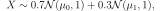
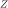
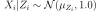
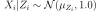

Note
Click here to download the full example code
Gibbs sampling of the posterior distribution¶
We sample the from the posterior distribution of the parameters of a mixture model.

where and are unknown parameters. They are a priori i.i.d. with prior distribution . This example is drawn from Example 9.2 from Monte-Carlo Statistical methods by Robert and Casella (2004).
import openturns as ot
from openturns.viewer import View
import numpy as np
ot.RandomGenerator.SetSeed(100)
Sample data with and  .
.
N = 500
p = 0.3
mu0 = 0.0
mu1 = 2.7
nor0 = ot.Normal(mu0, 1.0)
nor1 = ot.Normal(mu1, 1.0)
true_distribution = ot.Mixture([nor0, nor1], [1 - p, p])
observations = np.array(true_distribution.getSample(500))
Plot the true distribution.
graph = true_distribution.drawPDF()
graph.setTitle("True distribution")
graph.setXTitle("")
graph.setLegends([""])
View(graph)
Out:
<openturns.viewer.View object at 0x7f7308fad0c0>
A natural step at this point is to introduce
an auxiliary (unobserved) random variable 
telling from which distribution  was sampled.
was sampled.
For any nonnegative integer  ,
follows the Bernoulli distribution with ,
and .
,
follows the Bernoulli distribution with ,
and .
Let (resp.  ) denote the number of indices
such that (resp. ).
) denote the number of indices
such that (resp. ).
Conditionally to all  and all ,
and are independent:
follows
and all ,
and are independent:
follows
 and follows
.
and follows
.
For any , conditionally to , and ,
is independent from all ( )
and follows the Bernoulli distribution with parameter
)
and follows the Bernoulli distribution with parameter
We now sample from the joint distribution of conditionally to the using the Gibbs algorithm.
We define functions that will translate a given state of the Gibbs algorithm into the correct parameters
for the distributions of , , and the .
def nor0post(pt):
z = np.array(pt)[2:]
x0 = observations[z == 0]
mu0 = x0.sum() / (0.1 + len(x0))
sigma0 = 1.0 / (0.1 + len(x0))
return [mu0, sigma0]
def nor1post(pt):
z = np.array(pt)[2:]
x1 = observations[z == 1]
mu1 = x1.sum() / (0.1 + len(x1))
sigma1 = 1.0 / (0.1 + len(x1))
return [mu1, sigma1]
def zpost(pt):
mu0 = pt[0]
mu1 = pt[1]
term1 = p * np.exp(- (observations - mu1)**2 / 2)
term0 = (1.0 - p) * np.exp(- (observations - mu0)**2 / 2)
res = term1 / (term1 + term0)
# output must be a 1d list or array in order to create a PythonFunction
return res.reshape(-1)
nor0posterior = ot.PythonFunction(2 + N, 2, nor0post)
nor1posterior = ot.PythonFunction(2 + N, 2, nor1post)
zposterior = ot.PythonFunction(2 + N, N, zpost)
We can now construct the Gibbs algorithm
initialState = [0.0] * (N + 2)
sampler0 = ot.RandomVectorMetropolisHastings(
ot.RandomVector(ot.Normal()), initialState, [0], nor0posterior)
sampler1 = ot.RandomVectorMetropolisHastings(
ot.RandomVector(ot.Normal()), initialState, [1], nor1posterior)
big_bernoulli = ot.ComposedDistribution([ot.Bernoulli()] * N)
sampler2 = ot.RandomVectorMetropolisHastings(ot.RandomVector(
big_bernoulli), initialState, range(2, N + 2), zposterior)
gibbs = ot.Gibbs([sampler0, sampler1, sampler2])
Run the Gibbs algorithm
s = gibbs.getSample(10000)
Extract the relevant marginals: the first () and the second ().
posterior_sample = s[:, 0:2]
Let us plot the posterior density.
ks = ot.KernelSmoothing().build(posterior_sample)
graph = ks.drawPDF()
graph.setTitle("Posterior density")
graph.setLegendPosition("bottomright")
graph.setXTitle(r"$\mu_0$")
graph.setYTitle(r"$\mu_1$")
View(graph)
View.ShowAll()
Total running time of the script: ( 0 minutes 14.314 seconds)